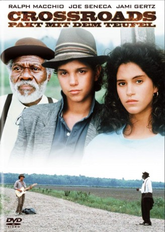
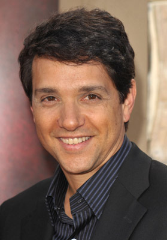
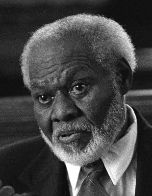
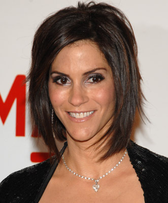
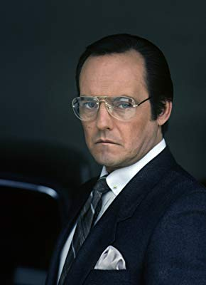
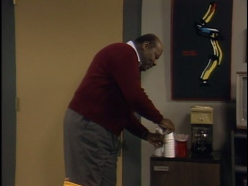
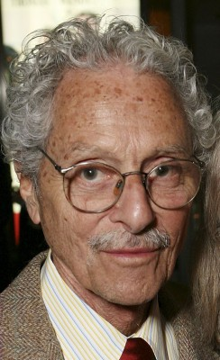
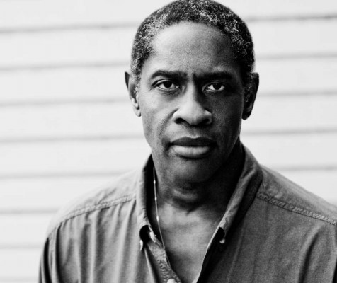
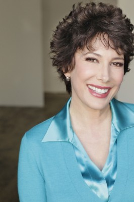

#11416 Crossroads - Pakt mit dem Teufel
Alternativ: Crossroads (Englischer Titel)
 
 IMDB-Wertung: 7.1 / 10
IMDB-Wertung: 7.1 / 10  Tomatometer: 73
Tomatometer: 73  Metascore: 55
Metascore: 55 
Eugene Martone fordert den Teufel und sein eigenes Schicksal heraus. Mit einer gelungenen Mischung aus Abenteuer, Romantik und Musik entführt der Film den begabten jungen Gitarristen Martone in eine gefährliche und zugleich faszinierende neue Welt. Besessen davon, das Geheimnis des Blues zu ergründen, macht sich der junge Musiker auf die Suche nach dem chronisch übellaunigen Willie Brown einen Meister auf der Blues-Harmonika, und befreit ihn aus dem Gefängnis. Das ungleiche Paar schlägt sich von New York nach Mississippi durch, wobei Martone ständig auf der Suche nach dem großen Durchbruch ist und Brown versucht, aus einem Vertrag herauszukommen, den er vor Jahren mit dem Teufel geschlossen hat. Unterwegs lernt Martone die hübsche Ausreißerin Frances kennen und verliebt sich in sie.
Jahr: 1986
Dauer: 98 Minuten
FSK: 12
Land: USA Studio: Columbia PicturesTonspuren: - , - , - , - ,
Untertitel: Deutsch, Englisch,
Auflösung: 720p (1280x720) Größe: 2385 MB
Genre: Drama, Musik, Liebe, Mystery
Regisseur:  Walter Hill
Walter Hill
Drehbuch: John Fusco
Soundtrack: Ry Cooder
Darsteller:
-  Ralph Macchio als Eugene Martone
-  Joe Seneca als Willie Brown
-  Jami Gertz als Frances
 Joe Morton als Scratch's Assistant
Joe Morton als Scratch's Assistant- Steve Vai als Jack Butler
-  Dennis Lipscomb als Lloyd
 Harry Carey Jr. als Bartender
Harry Carey Jr. als Bartender-  John Hancock als Sheriff Tilford
-  Allan Arbus als Dr. Santis
 Al Fann als Pawnbroker
Al Fann als Pawnbroker-  Tim Russ als Robert Johnson
- Guy Killum als Willie at 17
- Akosua Busia als Woman at Boardinghouse
 Allan Graf als Alvin
Allan Graf als Alvin Diana Bellamy als Hospital Supervisor
Diana Bellamy als Hospital Supervisor Karen Huie als Nurse #1
Karen Huie als Nurse #1-  Diane Robin als Nurse #7
- Jo Marie Payton als Jookhouse Woman #2
- Angela Robinson Witherspoon als Jookhouse Woman #3
- Marina Anderson als Barfly (uncredited)
 John Otrin als Paramedic (uncredited)
John Otrin als Paramedic (uncredited)- Robert Judd als Scratch
- Gretchen Palmer als Beautiful Girl / Dancer
- Wally Taylor als O.Z
- Tom Donaldson als John McGraw
- Edward Walsh als Harley Tethune
- Royce Wallace als Hotel Proprietress
- J.W. Smith als Man at Auto Wrecking Yard
- Johnny M. Reyes als Orderly
- Robin Townsend als Nurse #2
- Jeanne Kiely als Nurse #3
- Winifred Freedman als Nurse #4
- Dolores Aguanno als Nurse #5
- Debra Laws als Nurse #6
- Leslie Morris als Bus Station Clerk
- Gloria Delaney als Jookhouse Woman #1
- Deborra Hampton als Jookhouse Woman #4
- Le Van Hawkins als Jookhouse Man #1
- Jason Ross als Jookhouse Man #2
- Natasha Peacock als Young Girl at Crossroads
- Agnes Narciso als Miss Narciso
- Frank Frost als Jookhouse Musician (Harmonica / Vocalist)
- John Price als Jookhouse Musician (Drums)
- Otis Taylor als Jookhouse Musician (Lead Guitar)
- Richard 'Shubby' Holmes als Jookhouse Musician (Bass Guitar)
- Terry L. Evans als Jookhouse Musician (Keyboard)
- Bobby A. King als Guitar Duel Sequence Singer #1
- Sam King als Guitar Duel Sequence Singer #2
- Arnold McCuller als Guitar Duel Sequence Singer #3
- Willie J. Greene Jr. als Guitar Duel Sequence Singer #4
Datei: X:\1986\Crossroads - Pakt mit dem Teufel (1986, FSK12, 1280x720).mkv seit 03.07.2019
Festplatte: Gemischt-01+Anime
 Es gibt insgesamt 50 Filme in der Gruppe '1986'
Es gibt insgesamt 50 Filme in der Gruppe '1986'